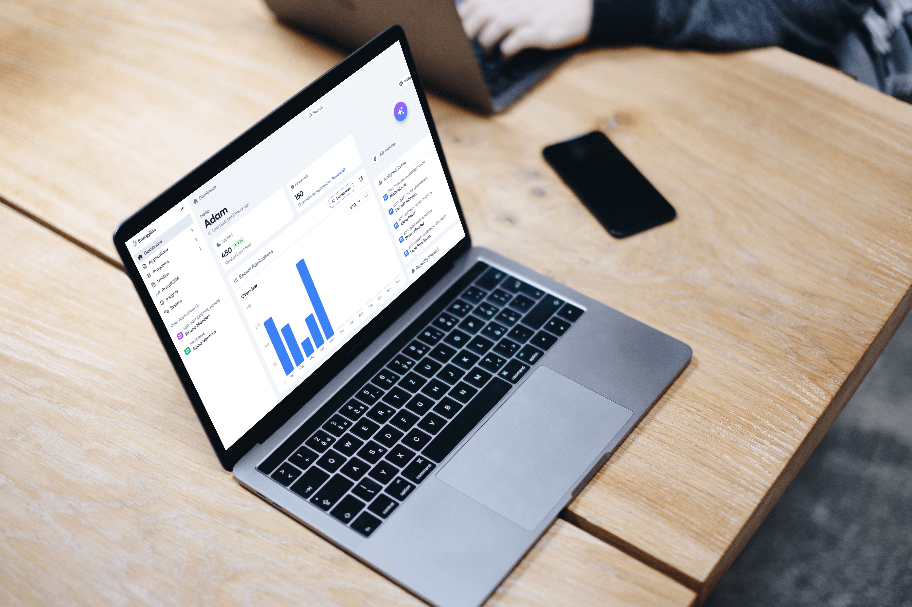
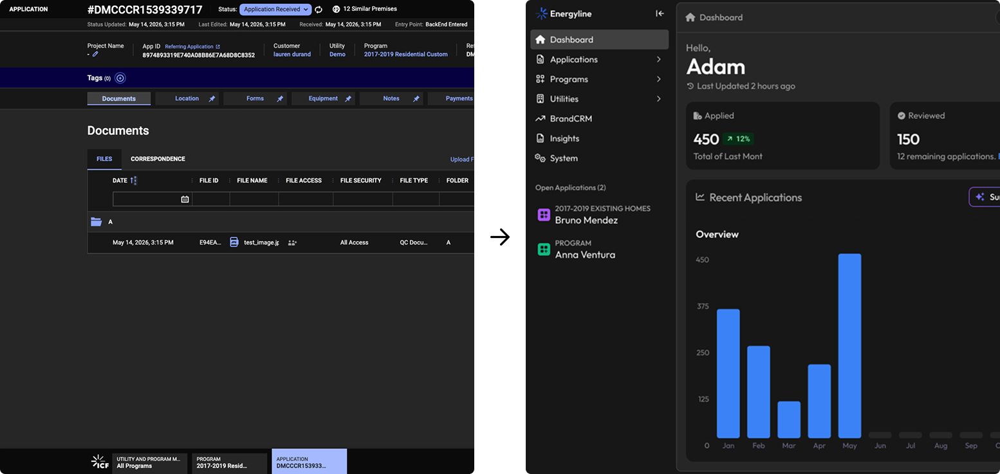
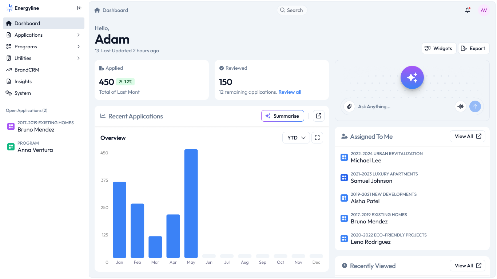
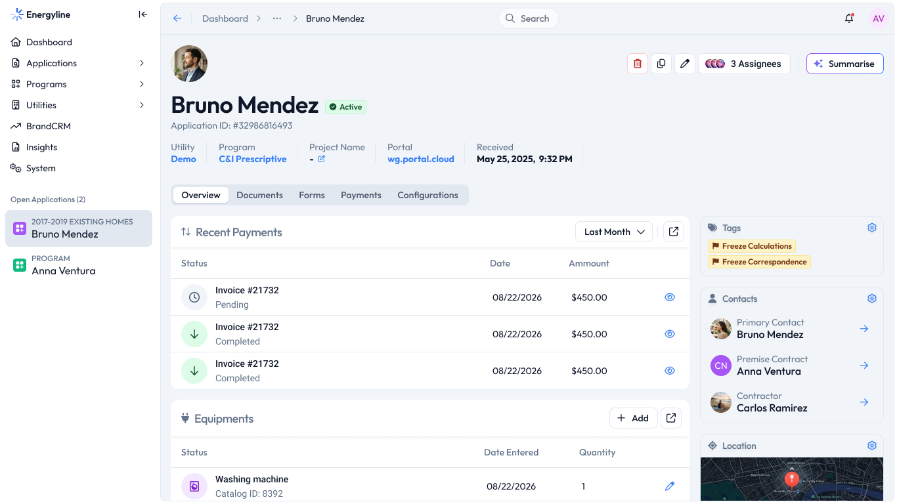
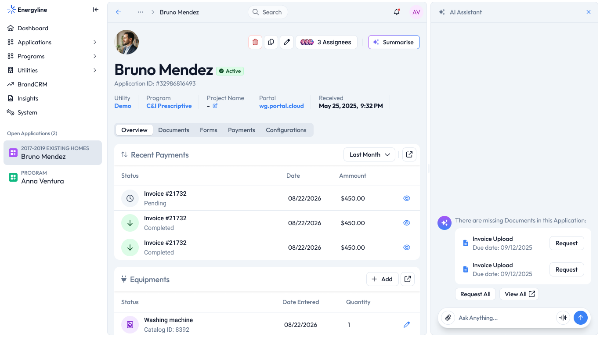
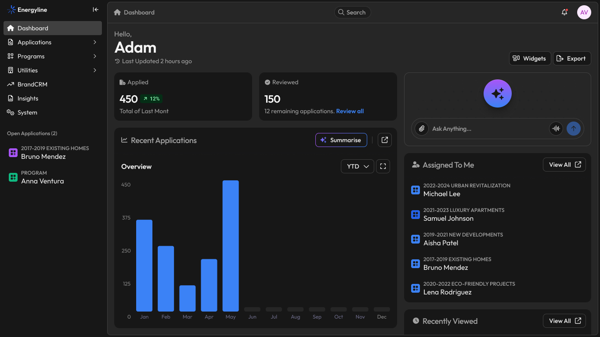
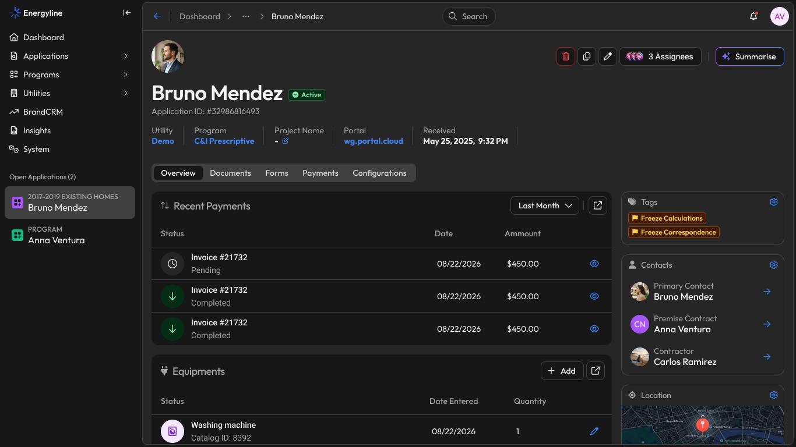
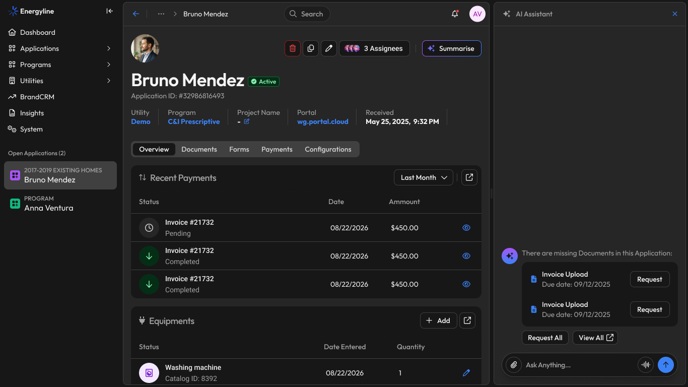

Product Designer
UI Designer
Design Systems
A reimagined application management experience for energy companies to review customer applications, track progress, and quickly understand what needs attention. This concept is inspired by real B2B energy workflows. The company, data, business rules, and interface have been reimagined to respect confidentiality.
Energy installation applications can contain a lot of information — customer details, properties, documentation, statuses, and different stages of the process.
Because the existing product had no updated design source files, the interface was reconstructed in Figma to create a reliable testing environment.

The dashboard was designed around two levels of information: understanding overall application activity and getting to individual applications quickly.
Key metrics provide context on volume and progress, while the application list keeps operational work immediately accessible.
The result is intentionally dense — but structured to make scanning feel effortless.

Once inside an application, the focus shifts from monitoring to understanding what needs to happen next.
Customer information, application progress, status controls, and relevant details are brought closer together, reducing the need to move between disconnected sections.
Shortcuts make deeper information available without turning every detail into another navigation step.

Complex applications can take time to understand, especially when something isn't quite right.
I explored an AI assistant that summarizes the application and highlights missing information, potential issues, and areas that may require attention.
Instead of making decisions for the user, AI provides a faster starting point for their review.

The interface is built on a semantic token system using Tailwind primitives and shadcn as its foundation.
Rather than using components out of the box, I adapted and maintain my own component layer, tokens, patterns, and documentation. Separating design decisions from their visual values also made themes easier to maintain — including a complete dark experience without redesigning individual components.


